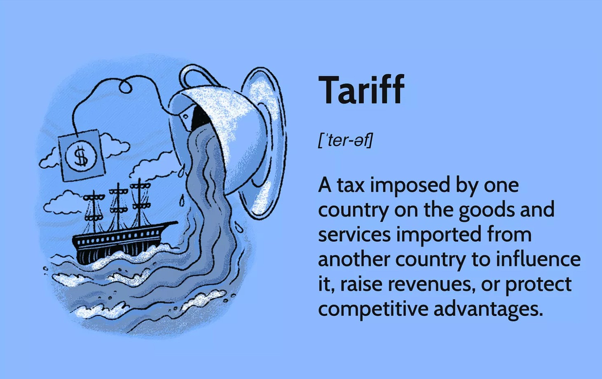

The Inflationary Impact of Tariffs
A Critical Analysis and Working Report - Aubrey Waddle

Tariffs, while often touted as tools for promoting domestic production and protecting local industries, are inherently inflationary. Understanding this requires a look at how tariffs function in a capitalist economy and their effects on both corporate behavior and consumer prices. This essay delves into the mechanics of tariffs, their implications, and why they fail to achieve meaningful long-term economic benefits without additional structural changes.
How Tariffs Increase Costs
When a tariff is imposed, it is paid by the importer—typically a company that brings goods or components into a country. For example, many automotive parts used by manufacturers like General Motors are imported from Mexico.
If a 25% tariff is levied on these imports, as the incoming United States administration proposes, it becomes an additional cost for the importer. "...we estimate that an additional 25 percent tariff on goods from Canada and Mexico combined with an additional 10 percent tariff on goods from China could add as much as 0.8 percentage point to core (excluding food and energy) inflation." (Federal Reserve Bank of Boston, 2025).
Theoretically, companies could absorb this cost by reducing their profit margins. However, in practice, companies are reluctant to do so.
Corporate structures are designed to maximize shareholder returns, and profit margins are rarely sacrificed unless absolutely necessary. "Tariffs also discourage capital accumulation by increasing the cost of capital production. This raises the return on capital relative to labor, benefiting wealthy households" (Federal Reserve Bank of Dallas, 2022).
Instead, companies offset increased costs through a combination of layoffs, wage cuts, reductions in employee hours, and price increases. "Tariffs raise the prices of tradable goods and services, and poor households spend relatively more on these than the rich" (Federal Reserve Bank of Dallas, 2022).
These measures ensure that profit margins remain wide, as required by fiduciary responsibilities to shareholders.
The introduction of tariffs triggers a predictable cycle. Initially, companies may attempt to cut costs by reducing their workforce or eliminating “waste,” often defined as lower-level jobs or benefits.
Concurrently, deregulation—if encouraged by the administration—may allow companies to cut corners on safety or quality standards to save money. However, these measures are usually insufficient to fully offset the costs of tariffs.
The final step is to increase the price of goods and services, passing the cost onto consumers. This directly contributes to inflation, as consumers pay more for the same products. In this way, tariffs do not merely fail to reduce costs; they actively drive prices upward. (Federal Reserve Bank of Boston, 2025)
Domestic Production: Another Inflationary Outcome
Proponents of tariffs often argue that they incentivize companies to move production back to the United States, creating jobs and reducing reliance on imports.
While this may happen if tariffs are set high enough, it does not lower prices. Manufacturing in the U.S. is more expensive due to higher wages, stricter regulations, and other factors.
Companies that shift production domestically will still seek to maintain profit margins, leading to higher prices for consumers. “The welfare implications of tariffs show significant heterogeneity; while they can promote domestic jobs, these come at the cost of long-term aggregate efficiency and price stability” (Federal Reserve Bank of Dallas, 2022).
There is no mechanism by which tariffs directly lower prices. Once prices rise due to increased costs, they rarely decline, as companies become accustomed to charging higher rates. This is particularly evident in industries like automotive manufacturing.
The Case for Tariffs and the Need for Structural Reforms
Despite their inflationary nature, tariffs can be justified in specific scenarios. For instance, if a country seeks to prevent domestic companies from exploiting low-wage Labor in the global south, tariffs can discourage outsourcing.
However, for tariffs to be effective without exacerbating economic inequality, additional measures are necessary. One such measure is the implementation of price controls.
By regulating the prices companies can charge, governments can prevent corporations from passing the costs of tariffs onto consumers. Additionally, policies that mandate profit-margin reductions—rather than workforce cuts or quality compromises—could help mitigate the negative impacts of tariffs.
Without these controls, the primary beneficiaries of tariffs remain corporations, while consumers and workers bear the economic burden.
The current and incoming administrations often propose tariffs as a solution to complex economic issues without addressing their broader implications.
Tariffs, in isolation, are unlikely to achieve their intended goals. Instead, they risk exacerbating inflation, undermining consumer purchasing power, and destabilizing the labor market.
For tariffs to succeed, they must be part of a comprehensive strategy that includes price controls, labor protections, and corporate accountability measures. Without these, tariffs function as a regressive tax on consumers.
What Led to This Right-Wing Understanding (or Misunderstanding) of Tariffs
The contemporary right-wing understanding of tariffs stems from a fundamental misunderstanding of global trade dynamics, often propagated by figures like Donald Trump and ideologically aligned commentators.
This perspective misinterprets trade deficits as a zero-sum game and frames them as evidence of national failure. This section aims to unravel these misconceptions and explore alternative, more equitable approaches to trade.
Central to the right-wing narrative is the belief that America’s trade deficit signifies exploitation by foreign partners.
In reality, the trade deficit reflects the United States’ role as a global hegemon, backed by unmatched military and economic power. The U.S. benefits from importing cheaper goods while maintaining dominance in high-value industries and services.
The right-wing tariff narrative assumes that tariffs alone can resolve trade imbalances without addressing global supply chains or corporate power.
Even liberal economic interpretations often overlook the exploitative structures underpinning global trade—structures highlighted by thinkers like Noam Chomsky and Michael Parenti.
Alternative Approaches to Global Trade and Headwinds to Implementation
A more ethical approach to trade would prioritize global collaboration rather than dominance. China’s Belt and Road Initiative offers one example of infrastructure-led development without IMF-style austerity.
Adopting such approaches would require a radical departure from capitalism’s shareholder-first logic.
U.S. political and economic systems are poorly structured for such reforms. Lobbying power and campaign finance ensure that policies favor capital over labor.
While liberal and conservative approaches differ rhetorically, both prioritize shareholder interests over working-class well-being.
Conclusion
The right-wing misunderstanding of tariffs reflects a broader failure to grasp the exploitative dynamics of global capitalism.
Tariffs are inflationary and ineffective as standalone tools. Without structural reforms, they merely shift costs onto consumers while leaving inequality intact.
References
Federal Reserve Bank of Dallas. On the Distributional Effects of International Tariffs. Globalization Institute Working Paper No. 413, January 2022. https://doi.org/10.24149/gwp413
Barbiero, Omar, and Hillary Stein. The Impact of Tariffs on Inflation. Federal Reserve Bank of Boston, Current Policy Perspectives No. 25-2, 2025.